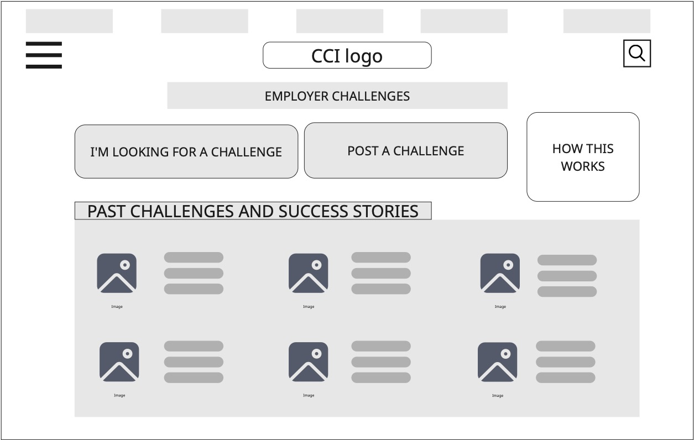
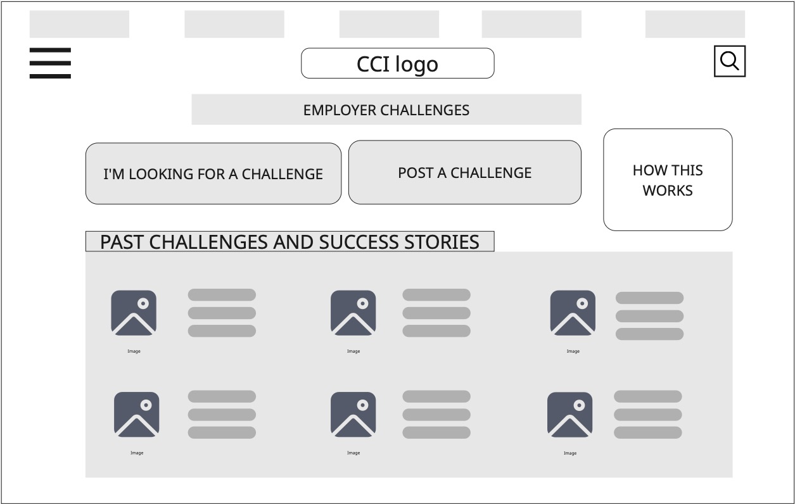
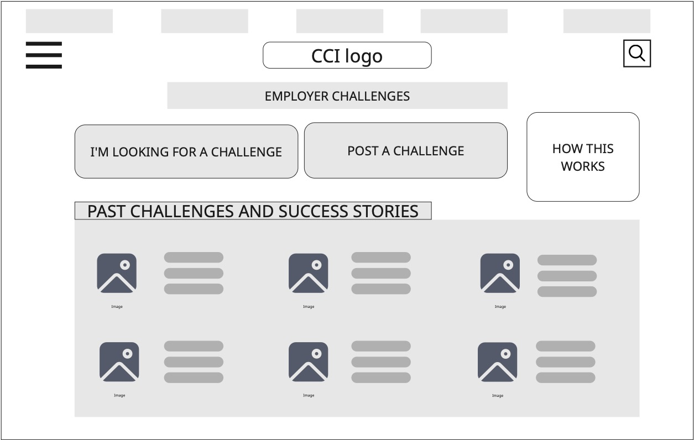

Page Layouts
 



The focus of this section of the Style Guide is on Visceral Design, which addresses the initial impact and emotional response users have when they first encounter a product or interface. It ensures the user has a positive first impression of the site based on its structure and layout. The style guide has been divided into three sections based on Don Norman's three levels of Emotional design: Visceral, Behavioural and Reflective.
